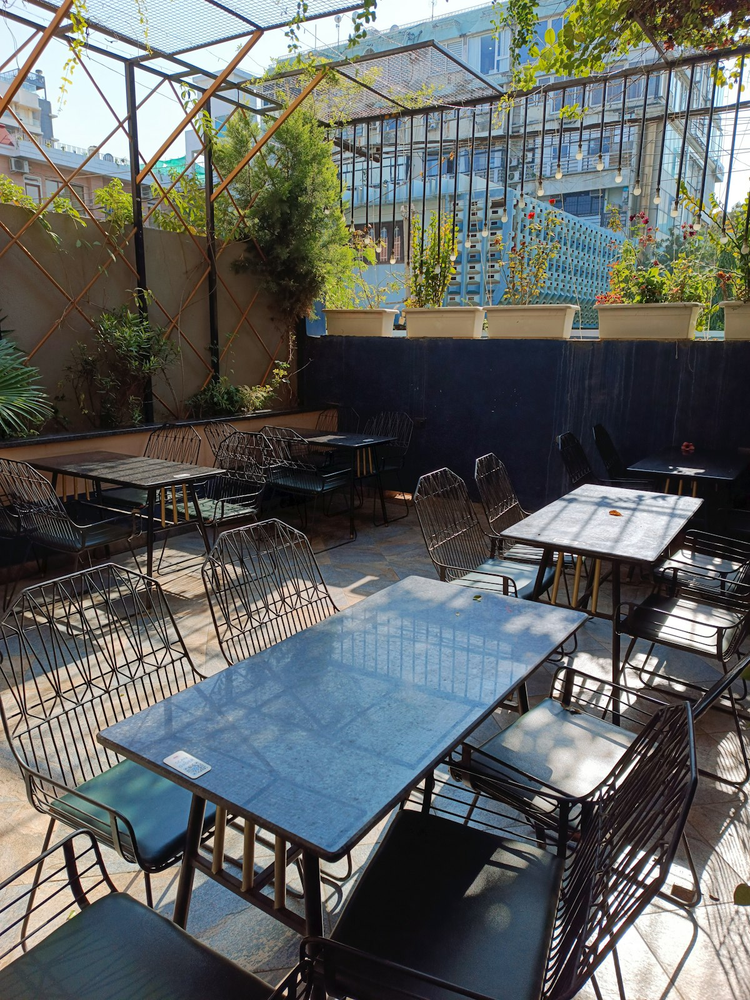

Rainy days guide
Covered dog-friendly cafes, pubs and beer gardens for rainy days
Find covered courtyards, undercover patios, indoor-friendly venues and all-weather beer gardens where dogs can still come along.

Popular places
A mix of covered, undercover and indoor-friendly places already listed on Bring Your Dog.
Pub/BarShelteredFitzroy
Bonny
Dog-friendly all-weather beer garden.
CafeShelteredCollingwood
Glassworks Cafe
Dogs welcome on undercover balcony seating.
CafeShelteredCollingwood
South of Johnston
Dogs welcome in outdoor seating and a dog-friendly indoor area.
Pub/BarShelteredBrunswick
Welcome to Brunswick
Dogs welcome inside and in covered beer garden areas.
Pub/BarShelteredRichmond
Bouzy Rouge
Dog-friendly fully covered courtyard.
Pub/BarShelteredFitzroy North
Monty's Bar
Dog-friendly inside and in the covered courtyard.
Good to know
What countsLook for covered, undercover, indoor-friendly, front bar, public bar or all-weather wording.
Best betPubs and bars are often easier in wet weather because they may have covered courtyards or indoor-friendly areas.
Worth checkingDog rules can change by time of day, weather setup or how busy the venue is, so check before travelling far.